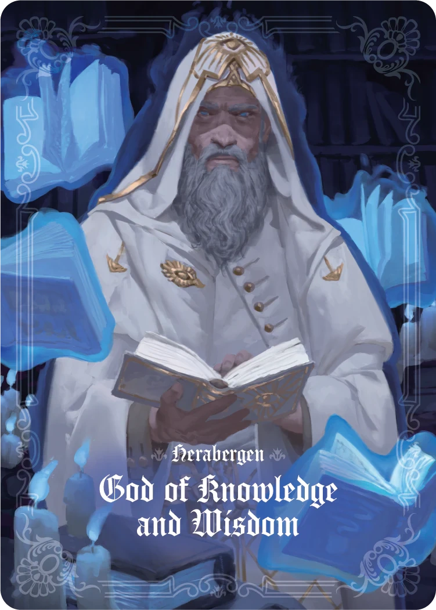

Overview
If you truly grasp the allure of knowledge and understand the joy of learning, even a long life will not be plagued by emptiness or torment. Knowledge embraces everything. Knowledge is everything...
God of Knowledge and Wisdom, Book 2, chapter 1128
The God of Knowledge and Wisdom is the Sequence 0 True God of the White Tower and the God of the Church of the God of Knowledge and Wisdom. After the Battle of Violated Oath Lenburg, Masin, and Segar believe in "Him".
Honorific Name
The Tower of Knowledge, The Embodiment of Reason, The God of Wisdom, The Scholar that Cognizes Everything (知识之塔， 理性化身， 智慧之神， 洞悉万物的学者。)
Sacred Emblem
Sacred Emblem is the symbol of the Gods which worshiped and glorified by people in the Fifth Epoch.
The Sacred Emblem of Knowledge and Wisdom is an omniscient eye on an open book.1
"He" has the title of being omniscient and omnipotent.4
Appearance
In Fourth Epoch: He appears as a hooded elder holding a book with an omniscient gaze, with only his mouth, wrinkles, and long white beard exposed.1Book 1, chapter 261
Twisted Version: An old man wearing a hood that revealed his mouth, wrinkles, and a white beard. The old man held an open book, and on top of it was an eye that was the symbol of omniscience. At first glance, this old man looked the most normal, but the smile on his face was indescribably evil.
- Twisted version was discovered in Forsaken Land of the Gods in the True Creator's Temple.5
History
Lord of Mysteries
According to orthodox legend, the Eternal Blazing Sun, the Lord of Storms, and the God of Knowledge and Wisdom were formed from the spirit of the Original Creator. The three of them helped humanity through the Cataclysm during the Third Epoch along with the Evernight Goddess, the Earth Mother, and the God of Combat.6
However, "He" is, in fact, the Dragon of Wisdom Herabergen, a Subsidiary God of Dragon of Imagination Ankewelt in the Second Epoch.7 "He" was born as an Innate Mythical Creature.8 After the Ankewelt's death, "He" turned to the Ancient Sun God and became the Wisdom Angel, one of the eight Kings of Angels in the Third Epoch.
Later, "He" joined Rose Redemption as a member of the Kings of Angels faction under the Dark Angel Sasrir, which eventually caused the Ancient Sun God's death.9 "He" then betrayed the Ancient Sun God and consumed "His" body along with the Lord of Storms and the Eternal Blazing Sun. Then, "He" became the now-known God of Knowledge and Wisdom, the Sequence 0 of the White Tower.
In the Fourth Epoch, all deities have "Their" own countries in poorer places and acknowledged the first Solomon Empire and the Black Emperor's rule over the Northern Continent in order to fight against the opposing factions. At this time, the Lord of Storms, the Eternal Blazing Sun, and the God of Knowledge and Wisdom had conflicts with each other due to "Their" neighboring pathways. Later on, "He" reached a common agreement with the other five Orthodox Gods, which led to the fall of the Black Emperor and the first Solomon Empire. Afterwards, the Six Gods supported the Tudor-Trunsoest United Empire that ruled the Northern Continent. When the Black Emperor was about to resurrect, the Six Gods helped Trunsoest to switch to Justiciar of the Justiciar, becoming the Night Emperor.
After the War of the Four Emperors, the Seven Gods (including the God of Craftsmanship who ascended during the war) fractured and supported different Angel Families of the Trunsoest Empire to form their own country.10 The God of Knowledge and Wisdom and the Earth Mother supported the Castiya Family to create the Feynapotter Kingdom. The Seven Gods then began fighting each other for the 167 years of the Conflicts of the Seven Gods.11
Later on, in the Pale Era, when Death went mad and caused havoc on the Northern Continent with the Primordial Demoness,12 the Seven Gods joined force and caused the destruction of Death and a fatal blow to the Primordial Demoness. When the barrier around the Earth cracked at the end of the Fourth Epoch, the Seven Gods moved "Their" Divine Kingdoms into the Astral World to mend the cracks.13 "His" old Divine Kingdom on Earth later became the headquarters of the Church of the God of Knowledge and Wisdom - now known as the Holy Temple of Knowledge, Lenburg.14
In the Fifth Epoch, "He" supported the Feynapotter Kingdom until the Battle of Violated Oath. After the war, Lenburg, Masin, and Segar were separated from Feynapotter and only believed in the God of Knowledge and Wisdom.
According to Lucca Brewster, the God of Knowledge and Wisdom had mentioned the prophecy in "His" holy bible: The Apocalypse will happen in the year 1368 in the Fifth Epoch, and there will be a savior.15
God mentioned in ‘His’ holy bible that the apocalypse will happen in the year 1368 in the Fifth Epoch. Of course, God also said that there will be a savior.
Lucca Brewster to Gehrman and Audrey, Book 1, chapter 1099
Through "His" arrangement, Klein received the key to the Giant King's Court, where Sasrir was asleep, via Edwina Edwards.
All Seven Gods wanted to have a Black Emperor, but "They" were not unanimous in "Their" candidate. As such, when George III managed to obtain the opportunity to become one through his preparations, the Seven Gods had no choice but to give "Their" tacit agreement.16 However, eventually George III's Apotheosis Ritual failed and "He" died on the spot.
In the 1350 World War, "He" stood on the Evernight Goddess' side and fought against the Eternal Blazing Sun in Lenburg.17 "They" won the war.
"He", along with the Eternal Blazing Sun, the Evernight Goddess, the Earth Mother, the Lord of Storms, and the God of Steam and Machinery held off the Mother Goddess of Depravity when Mr. Door returned back to Earth because of Amon's and Medici's plan.18 19
During Klein's Apotheosis Ritual, "He" was on Klein's side. "He", the Eternal Blazing Sun, and the Lord of Storms fought against Adam.20
Circle of Inevitability
After the events following the opening of Fourth Epoch Trier in 1358 of the Fifth Epoch, Lumian Lee received top-secret information on Sealed Artifact 0-01 from Ludwig, who was connected to the Church of the God of Knowledge and Wisdom.21
According to Madam Magician, this was a sign that the Church of the God of Knowledge and Wisdom was willing to support his bid for the Red Priest position, competing against the Red Angel Medici.22
During The Apocalypse, "He" abandoned "His" main body and chose self-destruction, merging with Grisha Adam to help "Him" battle the Primordial God Almighty's will. In the short term, Herabergen's residual consciousness would help Grisha Adam resist the Primordial God Almighty, forming a fragile new balance. In the long term, however, integrating the the Uniqueness of White Tower at that moment would enhance the Primordial God Almighty's will and spirit, accelerating "His" recovery—significantly disadvantaging Grisha Adam in "Their" struggle.2
Afterwards, "His" avatar was shown to be sighing within the Protected Zones.2
Translations
| Language | Name |
|---|---|
| English | God of Knowledge and Wisdom Wisdom Angel Herabergen |
| Chinese | 知识与智慧之神 智天使 赫拉伯根 |
| Thai | เทพแห่งความรู้และความเฉลียวฉลาด เทวทูตแห่งความรู้ เฮราเบอร์เกน |
References
- Book 1, chapter 261.
- Book 2, chapter 1158.
- Author's WeChat post black_emperor_formulas.
- Book 1, chapter 1070.
- Book 1, chapter 455.
- Book 1, chapter 18.
- Book 1, chapter 568.
- Author's WeChat post darkness_abilities, part 8.
- Book 1, chapter 1117.
- Book 1, chapter 469.
- Author's WeChat post history.
- Book 1, chapter 217.
- Book 1, chapter 1271.
- Book 1, chapter 698.
- Book 1, chapter 1099.
- Book 1, chapter 1087.
- Book 1, chapter 1259.
- Book 1, chapter 1352.
- Book 1, chapter 1353.
- Book 1, chapter 1376.
- Book 2, chapter 494.
- Book 2, chapter 500.
Source
Article adapted from the God of Knowledge and Wisdom article on the Lord of the Mysteries Fandom wiki (CC BY-SA). Chapter numbers follow that article's citation format.
Image gallery
